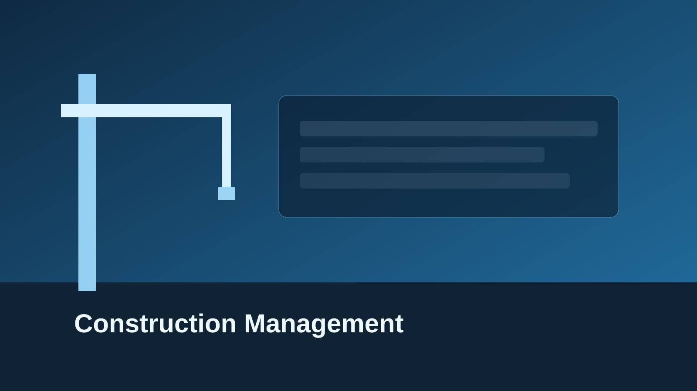
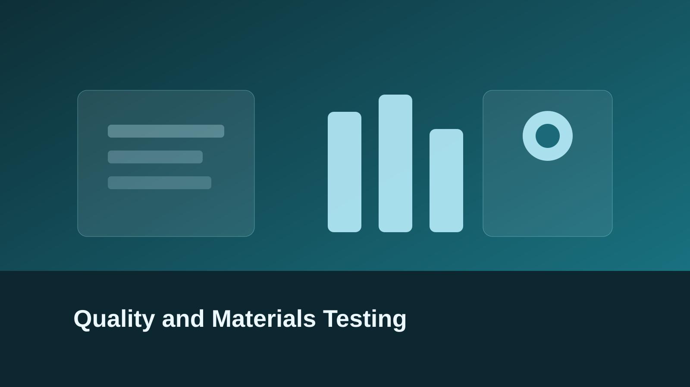
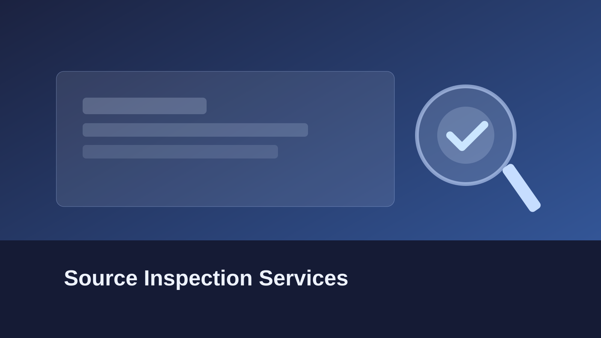
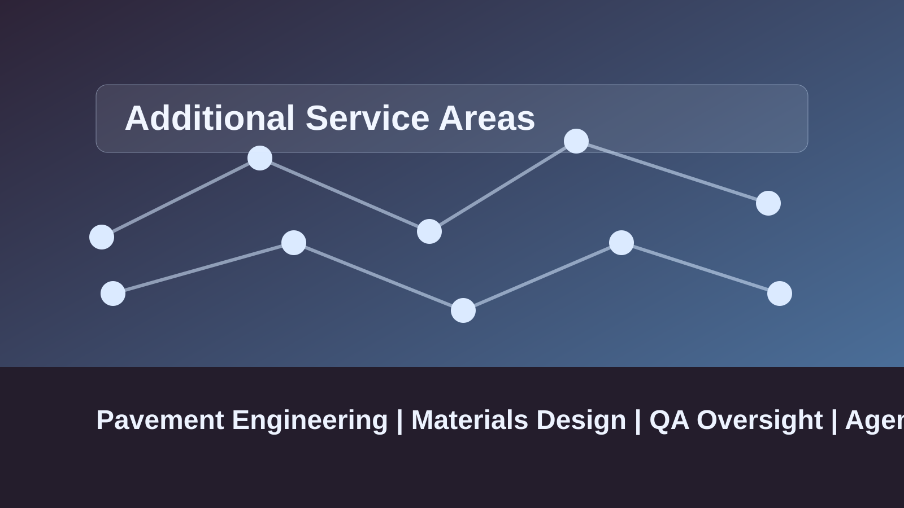

Construction Management
Resident engineering, office engineering, scheduling, claims management, and project closeout support.
View Service DetailsS2 Engineering partners with public agencies and delivery teams to provide quality management, pavement engineering, materials design, construction inspection, and testing services.

Resident engineering, office engineering, scheduling, claims management, and project closeout support.
View Service Details
Field and laboratory testing support for concrete, asphalt, aggregates, soils, and compaction programs.
View Service Details
METS-based source inspection including SIQMP, structural material verification, and QA/QV services.
View Service Details
Pavement engineering, materials design, QA/QC oversight, and public agency support.
View Service DetailsRepresentative public agencies and transportation partners.